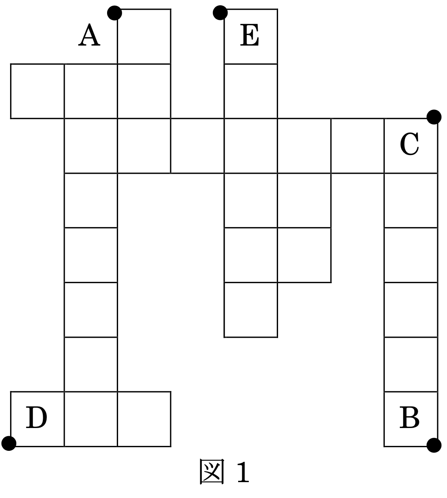
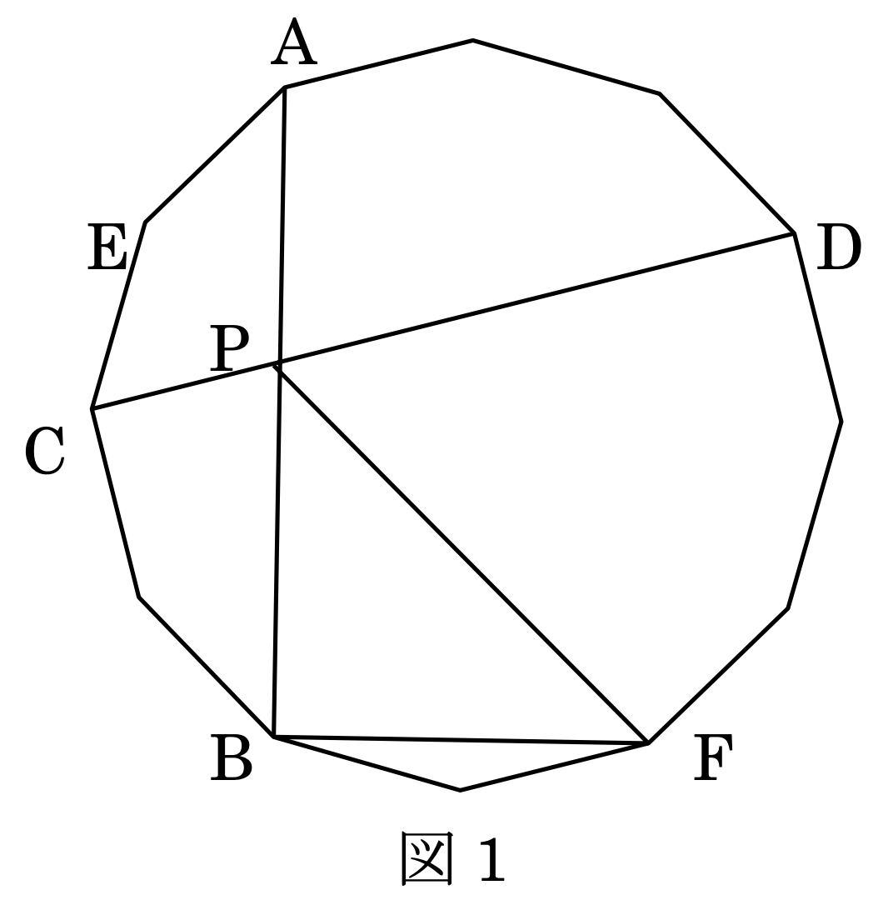

<!DOCTYPE html>
<html lang="ja" itemscope itemtype="http://schema.org/WebPage">
  <head>
    

  <meta charset="utf-8" />
  <meta http-equiv="X-UA-Compatible" content="IE=edge">
  <meta name="viewport" content="width=device-width, initial-scale=1.0, maximum-scale=1.0">

  <title>2017年開成文化祭 数学研究部 中学入試予想問題 | 開成学園数学研究部</title>
  <meta name="description" content="2017年開成文化祭 中学入試予想A問題 B1 算数 （A 問題）（目安：60 分） ◎候補問題のうち本物の入試に出るようなものを集めた問題セットとなってお"><script type="application/ld+json">
{
    "@context": "http://schema.org",
    "@type": "WebSite",
    "name": "開成学園数学研究部",
    
    "url": "https:\/\/kaiseimathclub.com\/"
}
</script><script type="application/ld+json">
{
  "@context": "http://schema.org",
  "@type": "Organization",
  "name": "",
  "url": "https:\/\/kaiseimathclub.com\/"
  
  
  
  
}
</script>
<script type="application/ld+json">
{
  "@context": "http://schema.org",
  "@type": "BreadcrumbList",
  "itemListElement": [{
        "@type": "ListItem",
        "position": 1,
        "item": {
          "@id": "https:\/\/kaiseimathclub.com\/",
          "name": "home"
        }
    },{
        "@type": "ListItem",
        "position": 3,
        "item": {
          "@id": "https:\/\/kaiseimathclub.com\/fest\/jhs\/jhs-2017\/",
          "name": "2017年開成文化祭 数学研究部 中学入試予想問題"
        }
    }]
}
</script><script type="application/ld+json">
{
  "@context": "http://schema.org",
  "@type": "Article",
  "author": {
    "name" : ""
  },
  "headline": "2017年開成文化祭 数学研究部 中学入試予想問題",
  "description" : "2017年開成文化祭 中学入試予想A問題 B1 算数 （A 問題）（目安：60 分） ◎候補問題のうち本物の入試に出るようなものを集めた問題セットとなってお",
  "inLanguage" : "ja",
  "wordCount":  3763 ,
  "datePublished" : "2017-09-23T00:00:00",
  "dateModified" : "2017-09-23T00:00:00",
  "image" : "https:\/\/kaiseimathclub.com\/img\/kaiseimathclub.png",
  "keywords" : [ "" ],
  "mainEntityOfPage" : "https:\/\/kaiseimathclub.com\/fest\/jhs\/jhs-2017\/",
  "publisher" : {
    "@type": "Organization",
    "name" : "https:\/\/kaiseimathclub.com\/",
    "logo" : {
        "@type" : "ImageObject",
        "url" : "https:\/\/kaiseimathclub.com\/img\/kaiseimathclub.png",
        "height" :  60 ,
        "width" :  60
    }
  }
}
</script>

<meta property="og:title" content="2017年開成文化祭 数学研究部 中学入試予想問題" />
<meta property="og:description" content="2017年開成文化祭 中学入試予想A問題 B1 算数 （A 問題）（目安：60 分） ◎候補問題のうち本物の入試に出るようなものを集めた問題セットとなってお">
<meta property="og:image" content="https://kaiseimathclub.com/img/kaiseimathclub.png" />
<meta property="og:url" content="https://kaiseimathclub.com/fest/jhs/jhs-2017/" />
<meta property="og:type" content="website" />
<meta property="og:site_name" content="開成学園数学研究部" />

  <meta name="twitter:title" content="2017年開成文化祭 数学研究部 中学入試予想問題" />
  <meta name="twitter:description" content="2017年開成文化祭 中学入試予想A問題 B1 算数 （A 問題）（目安：60 分） ◎候補問題のうち本物の入試に出るようなものを集めた問題セットとなってお">
  <meta name="twitter:image" content="https://kaiseimathclub.com/img/kaiseimathclub.png" />
  <meta name="twitter:card" content="summary_large_image" />
  <link href='https://kaiseimathclub.com/img/kaiseimathclub.png' rel='icon' type='image/x-icon'/>
  <meta name="generator" content="Hugo 0.124.1">
  <link rel="alternate" href="https://kaiseimathclub.com/index.xml" type="application/rss+xml" title="開成学園数学研究部"><link rel="stylesheet" href="https://cdn.jsdelivr.net/npm/katex@0.12.0/dist/katex.min.css" integrity="sha384-AfEj0r4/OFrOo5t7NnNe46zW/tFgW6x/bCJG8FqQCEo3+Aro6EYUG4+cU+KJWu/X" crossorigin="anonymous">
  <link rel="stylesheet" href="https://use.fontawesome.com/releases/v5.5.0/css/all.css" integrity="sha384-B4dIYHKNBt8Bc12p+WXckhzcICo0wtJAoU8YZTY5qE0Id1GSseTk6S+L3BlXeVIU" crossorigin="anonymous">
  <link rel="stylesheet" href="https://maxcdn.bootstrapcdn.com/bootstrap/3.3.7/css/bootstrap.min.css" integrity="sha384-BVYiiSIFeK1dGmJRAkycuHAHRg32OmUcww7on3RYdg4Va+PmSTsz/K68vbdEjh4u" crossorigin="anonymous"><link rel="stylesheet" href="https://kaiseimathclub.com/css/main.css" /><link rel="stylesheet" href="https://fonts.googleapis.com/css?family=Lora:400,700,400italic,700italic" />
  <link rel="stylesheet" href="https://fonts.googleapis.com/css?family=Open+Sans:300italic,400italic,600italic,700italic,800italic,400,300,600,700,800" />
  <link rel="stylesheet" href="https://kaiseimathclub.com/css/highlight.min.css" /><link rel="stylesheet" href="https://kaiseimathclub.com/css/codeblock.css" /><link rel="stylesheet" href="https://cdnjs.cloudflare.com/ajax/libs/photoswipe/4.1.2/photoswipe.min.css" integrity="sha384-h/L2W9KefUClHWaty3SLE5F/qvc4djlyR4qY3NUV5HGQBBW7stbcfff1+I/vmsHh" crossorigin="anonymous">
  <link rel="stylesheet" href="https://cdnjs.cloudflare.com/ajax/libs/photoswipe/4.1.2/default-skin/default-skin.min.css" integrity="sha384-iD0dNku6PYSIQLyfTOpB06F2KCZJAKLOThS5HRe8b3ibhdEQ6eKsFf/EeFxdOt5R" crossorigin="anonymous">
<html>
  <head>
    <title>開成学園数学研究部</title>
    <script type="application/ld+json">
    {
      "@context" : "https://schema.org",
      "@type" : "WebSite",
      "name" : "開成学園数学研究部",
      "url" : "https://kaiseimathclub.com/"
    }
  </script>
  </head>
  <body>
  </body>
</html>
  </head>
  <body>
    <nav class="navbar navbar-default navbar-fixed-top navbar-custom">
  <div class="container-fluid">
    <div class="navbar-header">
      <button type="button" class="navbar-toggle" data-toggle="collapse" data-target="#main-navbar">
        <span class="sr-only">メニューを切り替え</span>
        <span class="icon-bar"></span>
        <span class="icon-bar"></span>
        <span class="icon-bar"></span>
      </button>
      <a class="navbar-brand" href="https://kaiseimathclub.com/">開成学園数学研究部</a>
    </div>

    <div class="collapse navbar-collapse" id="main-navbar">
      <ul class="nav navbar-nav navbar-right">
        
          
            <li>
              <a title="About" href="/page/about">About</a>
            </li>
          
        
          
            <li class="navlinks-container">
              <a class="navlinks-parent">文化祭</a>
              <div class="navlinks-children">
                
                  <a href="/fest/shibuncase/shibuncase_index">部誌 (shibuncase)</a>
                
                  <a href="/fest/gp/gp_index">GP</a>
                
                  <a href="/fest/jhs/jhs_index">中学入試予想</a>
                
                  <a href="/fest/hs/hs_index">高校入試予想</a>
                
                  <a href="/fest/game/game_index">数研部員と勝負！</a>
                
                  <a href="/fest/crafts/crafts">工作展示</a>
                
                  <a href="/fest/stamp/stamp_index">スタンプラリー用問題</a>
                
                  <a href="/fest/nobel/nobel_index">開成ノーベル学会</a>
                
              </div>
            </li>
          
        
          
            <li>
              <a title="数研合宿" href="/camp/camp_index">数研合宿</a>
            </li>
          
        

        

        
      </ul>
    </div>

    
      <div class="avatar-container">
        <div class="avatar-img-border">
          <a title="開成学園数学研究部" href="https://kaiseimathclub.com/">
            
          </a>
        </div>
      </div>
    

  </div>
</nav>


    


<div class="pswp" tabindex="-1" role="dialog" aria-hidden="true">

<div class="pswp__bg"></div>

<div class="pswp__scroll-wrap">
    
    <div class="pswp__container">
      <div class="pswp__item"></div>
      <div class="pswp__item"></div>
      <div class="pswp__item"></div>
    </div>
    
    <div class="pswp__ui pswp__ui--hidden">
    <div class="pswp__top-bar">
      
      <div class="pswp__counter"></div>
      <button class="pswp__button pswp__button--close" title="Close (Esc)"></button>
      <button class="pswp__button pswp__button--share" title="Share"></button>
      <button class="pswp__button pswp__button--fs" title="Toggle fullscreen"></button>
      <button class="pswp__button pswp__button--zoom" title="Zoom in/out"></button>
      
      
      <div class="pswp__preloader">
        <div class="pswp__preloader__icn">
          <div class="pswp__preloader__cut">
            <div class="pswp__preloader__donut"></div>
          </div>
        </div>
      </div>
    </div>
    <div class="pswp__share-modal pswp__share-modal--hidden pswp__single-tap">
      <div class="pswp__share-tooltip"></div>
    </div>
    <button class="pswp__button pswp__button--arrow--left" title="Previous (arrow left)">
    </button>
    <button class="pswp__button pswp__button--arrow--right" title="Next (arrow right)">
    </button>
    <div class="pswp__caption">
      <div class="pswp__caption__center"></div>
    </div>
    </div>
    </div>
</div>


  
  
  


  

  <header class="header-section ">
    
    
    <div class="intro-header no-img">
      <div class="container">
        <div class="row">
          <div class="col-lg-8 col-lg-offset-2 col-md-10 col-md-offset-1">
            <div class="fest-heading">
              
                <h1>2017年開成文化祭 数学研究部 中学入試予想問題</h1>
              
              
                <hr class="small">
              
              
              
            </div>
          </div>
        </div>
      </div>
    </div>
  
  </header>


<link rel="stylesheet" href="https://kaiseimathclub.com//css/style.css">

<link rel="stylesheet" href="https://cdn.jsdelivr.net/npm/katex@0.16.2/dist/katex.min.css" integrity="sha384-bYdxxUwYipFNohQlHt0bjN/LCpueqWz13HufFEV1SUatKs1cm4L6fFgCi1jT643X" crossorigin="anonymous">

<script defer src="https://cdn.jsdelivr.net/npm/katex@0.16.2/dist/katex.min.js" integrity="sha384-Qsn9KnoKISj6dI8g7p1HBlNpVx0I8p1SvlwOldgi3IorMle61nQy4zEahWYtljaz" crossorigin="anonymous"></script>

<script defer src="https://cdn.jsdelivr.net/npm/katex@0.16.2/dist/contrib/auto-render.min.js" integrity="sha384-+VBxd3r6XgURycqtZ117nYw44OOcIax56Z4dCRWbxyPt0Koah1uHoK0o4+/RRE05" crossorigin="anonymous"
        onload="renderMathInElement(document.body);"></script>

<script>
    document.addEventListener("DOMContentLoaded", function() {
        renderMathInElement(document.body, {
            delimiters: [
                {left: "$$", right: "$$", display: true},
                {left: "$", right: "$", display: false}
            ]
        });
    });
</script>
    
<div class="container" role="main">
  <div class="row">
    <div class="col-lg-8 col-lg-offset-2 col-md-10 col-md-offset-1">
      <article role="main" class="blog-post">
        <h1 id="2017年開成文化祭-中学入試予想a問題">2017年開成文化祭 中学入試予想A問題</h1>
<h2 id="b1-算数">B1 算数</h2>
<p>（A 問題）（目安：60 分）</p>
<p>◎候補問題のうち本物の入試に出るようなものを集めた問題セットとなっております。（少し難しめです）。<br>
<strong>◎答えが分数になるときは、できるだけ約分して答えなさい。円周率が必要なときは $3.14$ を用いなさい。</strong><br>
<strong>◎答え合わせは何度でも可能です。一問でも解けたら採点係のところまで持ってきてください。</strong><br>
<strong>◎解答用紙の「対決」に○を付けた場合、<u>一回目のみ</u>数研部員の答案を採点したときと同じ採点基準で点数をつけ、数研部員内での順位を出します。作問に関与していない部員が 60 分で解きましたが、60 分で解くかどうかは挑戦者の判断に委ねます。もちろん採点以降も答え合わせは可能ですので、ぜひ挑戦してみてください。</strong></p>
<h3 id="1">1</h3>
<p>次の問題に答えなさい。（答えのみでよい）</p>
<h4 id="1-1">(1)</h4>
<p>次の式に共通して入る $x$ の値を求めなさい。$$\frac{\frac{1}{17}-\frac{1}{29}}{\frac{20}{17}-\frac{29}{x}}\times47\div x=\frac{12}{29}$$</p>
<h4 id="2">(2)</h4>
<p>四角形 $\mathrm{ABCD}$ は $\angle{\mathrm{DAB}}=\angle{\mathrm{ABC}}=\angle{\mathrm{ACD}}=60\degree$、$\mathrm{AB}=10\text{ cm}$、$\mathrm{BC}=3\text{ cm}$ を満たす。$\mathrm{AD}$ の長さを求めなさい。</p>
<h4 id="3">(3)</h4>
<p>3 桁の整数 $\mathrm{ABC}$ を $9$ 進法で表すと $\mathrm{CBA}$ となった。この整数 $\mathrm{ABC}$ を $10$ 進法で答えなさい。</p>
<h4 id="4">(4)</h4>
<p>$\mathrm{ABCDEFGHI}$ を $\mathrm{F\square \square \square D\square \square \square C}$ に並び替えるという操作を考える。$123456789$ にこの操作を $30$ 回行っても $2018$ 回行っても $123456789$ のままだったという。空欄を埋めなさい。ただし $\mathrm{F\square \square \square D\square \square \square C}$ のどの連続する 2 つを見てもアルファベットが連続していないものとする。（$\mathrm{AB}$ は連続しているが $\mathrm{BA}$ は連続していない）</p>
<h4 id="5">(5)</h4>
<p>サイコロを 2 回振ったところ、出た目が順に $x$、$y$ であった。一辺 $6\text{ cm}$ の立方体 $\mathrm{ABCD-EFGH}$ において、</p>
<ol>
<li>$\mathrm{C}$ を含む 3 辺それぞれにおいて頂点 $\mathrm{C}$ からの距離が $x$ である点を取る。</li>
<li>$\mathrm{G}$ を含む 3 辺それぞれにおいて頂点 $\mathrm{G}$ からの距離が $y$ である点を取る。</li>
<li>操作 1 で取った 3 点を通る平面、操作 2 で取った 3 点を通る平面で同時に切断する。</li>
</ol>
<p>という操作を行ったところ、$\mathrm{B}$ を含む立体の体積が $195\text{ cm}^3$ になった。$(x,y)$ を求めなさい。</p>
<h3 id="2-1">2</h3>
<p>整数同士で割り算をして、割り切れず数字が無限個続くものを「循環小数」と呼ぶ。</p>
<p>$\mathrm{A}$ には単位分数（分子が $1$ である分数）のうち小数で表すと循環小数であるものすべてが、値が大きい順に並んでいる。</p>
<h4 id="1-2">(1)</h4>
<p>$\mathrm{B}$ には $\mathrm{A}$ に含まれる分数のうち分母が $2018$ 以下のものが、値が大きい順に並んでいる。</p>
<h5 id="heading">①</h5>
<p>$\mathrm{B}$ に分数はいくつ含まれるか答えなさい。</p>
<h5 id="heading-1">②</h5>
<p>$\mathrm{B}$ のうち、分母の数がちょうど 2 つだけ連続している部分の、分母が小さい方の分数を全て求めなさい。</p>
<h5 id="heading-2">③</h5>
<p>$\mathrm{B}$ は、いくつの分母が連続している組に分けられるか答えなさい。（例：$\frac{1}{2}$, $\frac{1}{3}$, $\frac{1}{4}$, $\frac{1}{6}$, $\frac{1}{8}$, $\frac{1}{9}$ は $(\frac{1}{2},\frac{1}{3},\frac{1}{4})$, $(\frac{1}{6})$, $(\frac{1}{8},\frac{1}{9})$ の 3 組に分けられる。）</p>
<h4 id="2-2">(2)</h4>
<p>$\mathrm{C}$ には $\mathrm{A}$ に含まれる分数のうち分母が $n$ 以下のものが、値が大きい順に並んでいる。$\mathrm{C}$ が 36 個の分母が連続している組に分かれるとき、考えられる $n$ の範囲を求めなさい。</p>
<h2 id="c1-算数">C1 算数</h2>
<p>（A 問題）</p>
<h3 id="3-1">3</h3>
<p>普通電車、急行電車、快速電車の 3 種類の電車が同じ方向に走っています。普通電車の速さは時速 $72\text{ km}$ です。普通電車がトンネルに完全に入ってから $5$ 秒後に急行電車がトンネルに入り始めました。このとき、快速電車はトンネルまであと $600\text{ m}$ の場所にいました。快速電車がトンネルに入り始めた時、急行電車は普通電車に追いつきました。その後、快速電車が急行電車を追い越したとき、快速電車はトンネルを出始め、急行電車は普通電車を追い越しました。普通電車は $8$ 両編成、急行電車、快速電車は $10$ 両編成で $1$ 両の長さは $20\text{ m}$ です。</p>
<h4 id="1-3">(1)</h4>
<p>トンネルの長さを求めなさい。</p>
<h4 id="2-3">(2)</h4>
<p>急行電車と快速電車はそれぞれ時速何 $\text{km}$ か求めなさい。</p>
<h3 id="4-1">4</h3>
<p>さとし君は来年行われる 147th 開成祭のために一辺 $20\text{ cm}$ の立方体のブロックを床に並べてそれをくっつけて立体を作った。それを上から見た図が図 1 である。以下、表面積は床との接地面も含むものとする。</p>
<h4 id="1-4">(1)</h4>
<p>この立体の体積と表面積を求めなさい。</p>
<p>しかし、さとし君はこの立体が倉庫に入らないことに気づき、図 1 の面を床に置き、$\mathrm{AB}$ を通り地面に垂直な平面で切断した。</p>
<h4 id="2-4">(2)</h4>
<p>点 $\mathrm{D}$ を含む立体の体積と表面積を求めなさい。必要ならば直角を挟む 2 辺の長さが $3$, $4$ である直角三角形の斜辺の長さが $5$ であることを用いてもよい。</p>
<p>さとし君はこれを倉庫にしまおうとしたがこれも入らないことに気づき、周りの人々に笑われた。切り方が悪かったと後悔し、図 1 の面を床に置き、$\mathrm{CD}$ を通り地面に垂直な平面で切断した。すると無事倉庫にしまうことができた。</p>
<h4 id="3-2">(3)</h4>
<p>点 $\mathrm{E}$ を含む立体の体積と表面積を求めなさい。</p>
<p></p>
<h1 id="2017年開成文化祭-中学入試予想b問題">2017年開成文化祭 中学入試予想B問題</h1>
<h2 id="b1-算数-1">B1 算数</h2>
<p>（B 問題）（目安：60 分）</p>
<p>◎候補問題から良問を厳選した問題セットとなっております。ぜひ楽しんで解いてください（かなり難しめです）<br>
<strong>◎答えが分数になるときは、できるだけ約分して答えなさい。円周率が必要なときは $3.14$ を用いなさい。</strong><br>
<strong>◎答え合わせは何度でも可能です。一問でも解けたら採点係のところまで持ってきてください。</strong><br>
<strong>◎解答用紙の「対決」に○を付けた場合、<u>一回目のみ</u>数研部員の答案を採点したときと同じ採点基準で点数をつけ、数研部員内での順位を出します。作問に関与していない部員が 60 分で解きましたが、60 分で解くかどうかは挑戦者の判断に委ねます。もちろん採点以降も答え合わせは可能ですので、ぜひ挑戦してみてください。</strong></p>
<h3 id="1-5">1</h3>
<p>川沿いの 4 つの地点が下流から順に $\mathrm{P}$, $\mathrm{Q}$, $\mathrm{R}$, $\mathrm{S}$ と並んでいて、$\mathrm{PR}=990\text{ m}$ である。午前 9 時に A 君は $\mathrm{P}$ から、B 君は $\mathrm{Q}$ から船に乗って出発した。A 君が $\mathrm{Q}$ に着いた時、B 君は $\mathrm{PQ}:\mathrm{QX}=1:1$ なる $\mathrm{Q}$ より上流の地点 $\mathrm{X}$ にいたので、A 君は静水時の速さを $2$ 倍にしたところ、A 君は B 君を $\mathrm{R}$ で追い越した。この $36.5$ 分後に A 君と B 君は出会った。これは A 君が $\mathrm{S}$ に到着し陸で $18$ 分間休んだ後静水時の速さを到着時の $0.25$ 倍にして $\mathrm{P}$ に向かって出発した後のことである。この $36.5$ 分後に B 君は A 君を $\mathrm{R}$ で追い越した。これは B 君が $\mathrm{S}$ に到着し陸で $18$ 分間休んだ後静水時の速さを変えて $\mathrm{P}$ に向かって出発したあとのことである。その後 B 君は A 君より $12$ 分早く $\mathrm{P}$ に到着した。川の速さが常に一定であった時、次の問いに答えなさい。</p>
<h4 id="1-6">(1)</h4>
<p>A 君が $\mathrm{P}$ に到着したときの$\text{（船の静水時の速さ）}:\text{（川の流れの速さ）}$を求めなさい。</p>
<h4 id="2-5">(2)</h4>
<p>川の速さは分速何 $\text{m}$ か求めなさい。</p>
<h4 id="3-3">(3)</h4>
<p>A 君が $\mathrm{S}$ に到着したのは午前何時何分か求めなさい。</p>
<h3 id="2-6">2</h3>
<p>整数 $n$ は、$n$ の各位の桁の和も $n+1$ の各位の桁の和も $2018$ の倍数であったという。$n$ の桁数を $m$ とする。</p>
<h4 id="1-7">(1)</h4>
<p>$m$ の最小値を求めなさい。</p>
<h4 id="2-7">(2)</h4>
<p>$m$ が最小であるとき、考えられる $n$ のうち</p>
<h5 id="heading-3">①</h5>
<p>最小の数と 3 番目に小さい数の差を求めなさい。</p>
<h5 id="heading-4">②</h5>
<p>最大の数と 3 番目に大きい数の差を求めなさい。</p>
<p>ただし、解答の際 $43999999$ を $439\dots\text{（6 個）}\dots9$ のように同じ数が連続して続く部分は連続している個数を書けば省略してよい。（省略した個数ではないので注意せよ）</p>
<h3 id="3-4">3</h3>
<p>開成中学校の売店ではりんごを $30$ 箱仕入れて、そのちょうど $4$ 割で $8$ 個入りで $200$ 円の A セットを、残ったりんごで $10$ 個入りで $240$ 円の B セットを余ることなく作ることができた。これらを全て売って $5$ 割の利益を出す予定だったが、B セットがいくつか売れ残ってしまった。このりんごを全て使って $12$ 個入りで $240$ 円の C セットを余ることなく作ることができた。その後 C セットも全て売り切ることができた。実際の利益は予定より $1300$ 円以上 $1600$ 円未満低かった。またりんごは一箱 $60$ 個未満である。</p>
<h4 id="1-8">(1)</h4>
<p>C セットはいくつ売れたか求めなさい。</p>
<h4 id="2-8">(2)</h4>
<p>りんご 1 個あたりの仕入れ値を求めなさい。</p>
<h4 id="3-5">(3)</h4>
<p>実際の利益を求めなさい。</p>
<h3 id="4-2">4</h3>
<p>次の問いに答えなさい。</p>
<h4 id="1-9">(1)</h4>
<p>半径 $6\text{ cm}$ の円に内接する正十二角形がある。$\mathrm{AB}$ と $\mathrm{CD}$ の交点を $\mathrm{P}$ とするとき（図 1）</p>
<h5 id="heading-5">①</h5>
<p>$\angle{\mathrm{APD}}$ の大きさを求めなさい。</p>
<h5 id="heading-6">②</h5>
<p>$\triangle{\mathrm{PBF}}$ の面積を求めなさい。</p>
<h5 id="heading-7">③</h5>
<p>$\angle{\mathrm{EPC}}$ の大きさを求めなさい。</p>
<h4 id="2-9">(2)</h4>
<p>次の四角形の面積を求めなさい。</p>
<h5 id="heading-8">①</h5>
<p>$\mathrm{AB}\parallel\mathrm{CD}$、$\angle{\mathrm{A}}=\angle{\mathrm{B}}=150\degree$、$\mathrm{CD}=8\text{ cm}$、$\mathrm{DA}=\mathrm{AB}=\mathrm{BC}$ の四角形 $\mathrm{ABCD}$</p>
<h5 id="heading-9">②</h5>
<p>$\mathrm{AB}=\mathrm{BC}$、$\angle{\mathrm{A}}=60\degree$、$\angle{\mathrm{B}}=150\degree$、$\angle{\mathrm{D}}=30\degree$、$\mathrm{CD}=8\text{ cm}$ の四角形 $\mathrm{ABCD}$</p>
<h4 id="3-6">(3)</h4>
<p>図 1 の四角形 $\mathrm{AECP}$ の面積を求めなさい。</p>
<p></p>
<h1 id="2017文化祭-中学入試予想a問題-解説解答採点基準">2017文化祭 中学入試予想A問題 解説・解答・採点基準</h1>
<p>準備中</p>
<h1 id="2017文化祭-中学入試予想b問題-解説解答採点基準">2017文化祭 中学入試予想B問題 解説・解答・採点基準</h1>
<p>準備中</p>


        

        

        
          

          
        
      </article>

      
        <ul class="pager blog-pager">
          
            <li class="previous">
              <a href="https://kaiseimathclub.com/fest/gp/gp-2017/" data-toggle="tooltip" data-placement="top" title="SUKEN GRAND PRIX 2017">&larr; 前ページ</a>
            </li>
          
          
            <li class="next">
              <a href="https://kaiseimathclub.com/fest/stamp/stamp-2017/" data-toggle="tooltip" data-placement="top" title="2017 開成数研スタンプラリー用問題">次ページ &rarr;</a>
            </li>
          
        </ul>
      


      

    </div>
  </div>
</div>

      
<footer>
  <div class="container">
    <div class="row">
      <div class="col-lg-8 col-lg-offset-2 col-md-10 col-md-offset-1">
        <ul class="list-inline text-center footer-links">
          
          
        </ul>
        <p class="credits copyright text-muted">
          &copy;
          
            2024
          
          
        </p>
        
        <p class="credits theme-by text-muted">
          <a href="https://gohugo.io">Hugo v0.124.1</a> powered &nbsp;&bull;&nbsp; Theme <a href="https://github.com/halogenica/beautifulhugo">Beautiful Hugo</a> adapted from <a href="https://deanattali.com/beautiful-jekyll/">Beautiful Jekyll</a>
          
        </p>
      </div>
    </div>
  </div>
</footer><script src="https://cdn.jsdelivr.net/npm/katex@0.12.0/dist/katex.min.js" integrity="sha384-g7c+Jr9ZivxKLnZTDUhnkOnsh30B4H0rpLUpJ4jAIKs4fnJI+sEnkvrMWph2EDg4" crossorigin="anonymous"></script>
<script src="https://cdn.jsdelivr.net/npm/katex@0.12.0/dist/contrib/auto-render.min.js" integrity="sha384-mll67QQFJfxn0IYznZYonOWZ644AWYC+Pt2cHqMaRhXVrursRwvLnLaebdGIlYNa" crossorigin="anonymous"></script>
<script src="https://code.jquery.com/jquery-3.5.1.slim.min.js" integrity="sha384-DfXdz2htPH0lsSSs5nCTpuj/zy4C+OGpamoFVy38MVBnE+IbbVYUew+OrCXaRkfj" crossorigin="anonymous"></script>
<script src="https://maxcdn.bootstrapcdn.com/bootstrap/3.3.7/js/bootstrap.min.js" integrity="sha384-Tc5IQib027qvyjSMfHjOMaLkfuWVxZxUPnCJA7l2mCWNIpG9mGCD8wGNIcPD7Txa" crossorigin="anonymous"></script>

<script src="https://kaiseimathclub.com/js/main.js"></script>
<script src="https://kaiseimathclub.com/js/highlight.min.js"></script>
<script> hljs.initHighlightingOnLoad(); </script>
<script> $(document).ready(function() {$("pre.chroma").css("padding","0");}); </script><script> renderMathInElement(document.body); </script><script src="https://cdnjs.cloudflare.com/ajax/libs/photoswipe/4.1.2/photoswipe.min.js" integrity="sha384-QELNnmcmU8IR9ZAykt67vGr9/rZJdHbiWi64V88fCPaOohUlHCqUD/unNN0BXSqy" crossorigin="anonymous"></script>
<script src="https://cdnjs.cloudflare.com/ajax/libs/photoswipe/4.1.2/photoswipe-ui-default.min.js" integrity="sha384-m67o7SkQ1ALzKZIFh4CiTA8tmadaujiTa9Vu+nqPSwDOqHrDmxLezTdFln8077+q" crossorigin="anonymous"></script><script src="https://kaiseimathclub.com/js/load-photoswipe.js"></script>


    
  </body>
</html>

